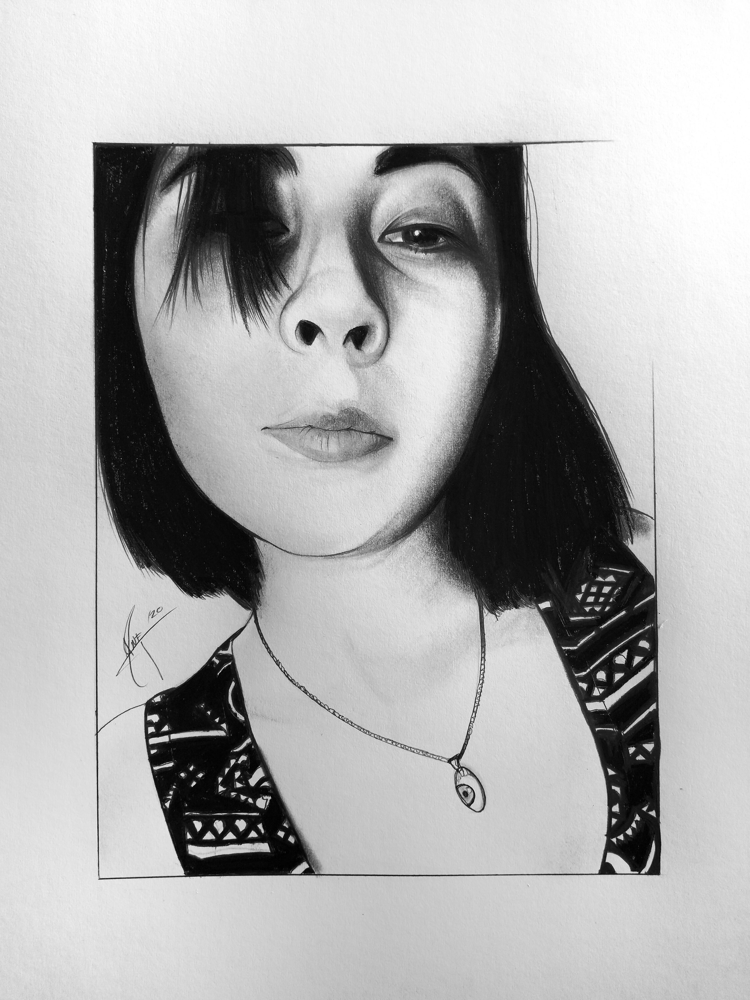

DESGARRE...
Recordando el comienzo
Sabes, voy admitir que las noches anteriores han sido algo largas (se puede decir, que no logre cerrar los OJOS) ha, seguro te preguntas ¿Qué es esto? ¿Por qué empiezo a escribir así? Y hoy voy a decir que, este es el inicio de mi melancolía de estar feliz por mi tristeza ¿el por qué? Y puedo decir que la razón de esto es… porque, la chica de la cual estoy locamente enamorado la he dejado escapar de nuevo por segunda vez que no estaré como su chico a su lado ¡ha! Lo sé, suena algo extraño, pero vamos por partes, puedo decir que a pesar de todo el tiempo para ti seis años para mi menos de 30 días que te conozco, no he sido capaz de ir y decirte directamente lo que sentía, pero esto no impedía plasmar mis absurdas ideas en líneas que gracias a un lapicero quedaron grabados en las hojas de un cuaderno, sé que esto ya es algo anticuado ya que la moda está en escribir los textos de forma digital y mandarlo al mundo de forma anónima, pero admito que hacer algunas cosas a la antigua tiene su encanto de cierta forma.
Puede que sea tedioso, aburrido, soso, la verdad es que la perspectiva de las cosas es diferente en cada persona, pero puedo decir esto, fue un accidente, si, esa fue la forma en que recuerdo que te conocí de la nada y en la vida hay tan pocos placeres como tu compañía.
Admito que no fui lo suficientemente rápido, la cosas es que no tengo ni tenía el valor para hacer eso pues desde hace tiempo que he evitado involucrarme en una relación formal pero entonces ¿le tememos a un nuevo amor, o le tememos a un viejo dolor? Pero la locura es hacer lo mismo y otra vez esperando obtener resultados diferentes creo que de igual manera aplica en el amor. Hace años lo escogiste a el y me dejaste de hablar, y esta vez se repite la misma fórmula, pero esta vez la quería cambiar, pero al final el resultado fue el mismo, y esta bien si vuelves una y otra vez es porque lo quieres o…
Me quede sorprendido al verte esa mañana en el quiosco de mi alcaldía después de tanto tiempo la sonrisa que tus labios mostraban, me llevaban a fantasear en silencio y que decir del brillo de tu mirada, todo esto era acompañado del aroma que emanaba de tu cuerpo que gracias al viento invadían mi ser, si, el olor era algo que me llevaba a navegar entre fantasías impuras e alucinaciones insanas que me obligan a escribir mentalmente sobre ti de una y mil maneras diferentes en las cuales cada línea llevan tu nombre, no importa en la forma que lo haga, siempre serias bella en cada una de mis líneas y recuerdos.
Puedo decir que la perspectiva de mi mente trabajo de mil maneras para grabar cada escena que pase a tu lado fuera efímera pero vivirían eternamente en mis recuerdos para repetirla una y otra vez ya fuese desde hace años o recuerdos de un par de meses , este sueño duro una breve eternidad pero con el sueño viene la pesadilla en el que ahorita me encuentro ,mi mente estaba perdida en el silencio, no me importaba nada y nadie, puedo decir que en esos momento el mundo se hundió en el silencio, pero al volver a encontrarnos volvió un mundo donde solo te veo y el resto del mundo era borroso, difuso, algo así como una de esa escenas de películas románticas, ¿alguna conociste la tortura de la ausencia? Si, soy exagerando, aunque no hay mal que dure para siempre pero
He aquí sentado bajo la oscuridad de esta noche,
Escribiendo absurdas líneas para ti,
Hoy te escribo a ti que me robaste muy pocos momentos y suspiros,
Sin ningún esfuerzo, que me reconfortas solo con tu ser
Me llenaste de calidez en mis días fríos llenos de soledad
Si, escribo estas líneas solo para ti
Líneas llenas de devoción y perdición.
Líneas de amor que se esconden detrás de las sombras
Hoy entre esta niebla te escribo.
Como tú fiel devoto, le pido a la oscuridad de la luna y las estrellas para que sonrías.
Hoy te escribo, teniendo al firmamento de testigo
Hoy te escribo, porque te quise
Hoy te escribo, porque te quiero
Hoy te escribo, porque te querré
A pesar de estar detrás, escondido en la oscuridad de salón o del espejo negro de mi celular.
Puedo decir que mi mente se quedó fascinada por cada momento que pase a tu lado, la belleza de tu sonrisa creaba unos hoyuelos en tu rostro que son fascinantes para mis ojos, ¡RAYOS! Puedo seguir describiendo todo sobre ti y cada una de tus virtudes al punto que puedo llenar varios libros escribiendo tu verdadera belleza, pero ahora ya es tarde o es temprano ¿Cómo debería decirlo?
¿Qué puedo decir? Te he querido siempre, aunque nuestra historia fue todo lo contrario, puedo decir que es un recuerdo muy dulce y amargo, todo gracias a estas malditas emociones, sé que debí ser más cuidadoso con mis cursis ideas de un amor imaginario, pero eso ya no tiene importancia ya que ahora estas junto a él de nuevo.
Bueno la cosa más hermosa que podemos experimentar es el misterio y poder enfrentarlo y es mejor cometer cualquier tipo de error, que caer en el hábito de la vacilación, de incertidumbre de indecisión, y puedes ser ese misterio al que no me sumergiré, el misterio de tus abrazos, el misterio de tus besos, el misterio del sabor de tus lindos labios finos, el misterio de lo que de lo que no pudo ser, el misterio de morir sin haber vivido a tu lado. y si trato de cortar a si de tajo es porque tan solo con hablarte o salir contigo se convertirá en una tortura al no poder expresar lo mucho que te quiero, y esas malditas ganas de poder besarte tomar tu mano etc. Es peor tortura que todos los juguetes que tenía la Santa inquisición.
Yo si me agüité, no fui tan fuerte como Bratty
es momento de decirte adiós, aunque espero sea un hasta luego.
esta noche es distinta es…

Ma'alob k'iin
Creo que lo que estoy haciendo es innecesario pero bueno te lo diré, pues la verdad sé que es exagerado esto que estoy apuntó de hacer eres esa persona con la que rompo mis propias reglas. Pero bueno empezaré siendo lo más breve posible.
Me es imposible verte y quererte como una amiga ya que por tu personalidad y tu forma de ser me encanta tanto que me siento bien estando a tu lado ni siquiera llegando a segunda base contigo porque te respeto y me he contenido muchas cosas que he querido decirte, te miro con admiración, pero no sé cómo expresarlo siendo honesto ya que desde hace mucho tiempo nadie ha sido de merecedora de dicha admiración. Que tú te has ganado.
Supongo que me dejas de hablar por 2 razones 1 yo te aburrí o la otra porque de nuevo otra persona se vuelve a cruzar en tu camino en parte también no pregunte si antes de curar estaría dispuesta a renunciar de las cosas que lo han enfermado.
Púes la verdad es que eres la persona con que la que he querido algo serio y decir que tú eres mi chica y yo tu chico, pero creo que eso nunca sucederá.
Tan solo me queda solo imaginar infinitos sabores de esos finos labios que tienes, El misterio de entrelazar nuestras manos y saber dónde llegarán, deslizar la yema de mis dedos por esa linda tez color apiñolada, como surfear por las curvas de tu sensual espalda que presumes y la incógnita de a donde llegare al perderme con el brillo de tu mirada y en tu destructiva voz canto de sirena.
Buen viaje en tu senda